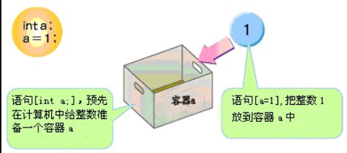
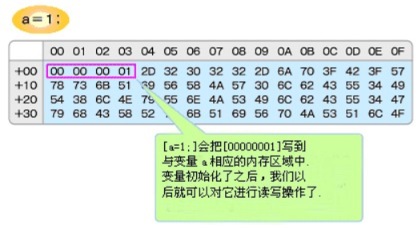
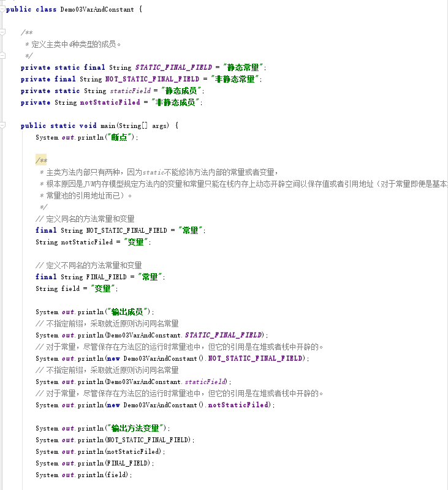
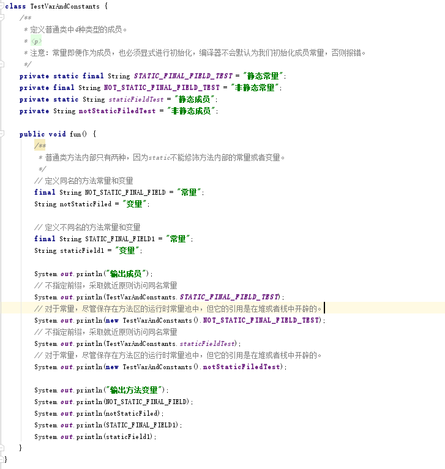

JAVA 变量和常量的本质
1、理解变量和常量的概念
1.1、 相同点
1. 都是操作数，本质都是一块有名称的内存空间；
2. 不论是变量还是常量，都必须指定数据类型。
1.2、 不同点
1. 同一个名称的变量其内存空间的值可以被修改，即变量可以被重置，而同一个名称的常量其内存空间一旦初始化将不能重置为其他内容，即常量的值不可以被重置。
2. 变量作为成员变量时，JVM将自动初始化；而常量不论作为成员常量还是方法常量都需要手动初始化，因为常量是在编译阶段就要放置在 class 常量池中的。。
3. 变量和常量存放的物理内存位置不同：
方法变量永远存放在栈内存（如果是基本类型栈中保存值，如果是引用类型栈中保存引用地址）；方法常量永远存在方法区的运行时常量池（此时方法常量复制的是class常量池中该常量的内存地址副本）。
静态成员变量永远存在于方法区内存的静态区；静态成员常量永远存在方法区内存的运行时常量池。
非静态成员变量永远存在对象的堆内存；非静态成员常量永远存在方法区内存的运行时常量池（此时方法常量复制的是class常量池中该常量的内存地址副本）。
备注：上面所有的保存指的都是基本值或者引用类型的引用地址，而不是对象实体，注意java中所有对象实体都保存在堆内存，这是毋庸置疑的。
2、深入理解常量和变量：
2.1、 变量的本质
1. int a：告诉计算机我要申请一块4bytes的内存空间，对于编译器而言，a变量声明过了，那么在加载进JVM后a变量对应的位置永远就是为它分配的内存空间，所以后续操作a变量就是操作它的内存空间；
2. a = 100;上一步声明了a变量为它分配了内存空间后，这一步初始化变量。很简单，将100这个值放在为a变量分配的内存空间中；
3. a = 250;为a变量初始化后，可以重置a变量的值；即将250重新放在a变量所占的内存中；此时上面的100将被回收。（注意，基本类型的包装类和String都是不可变的，它们都是重新开辟堆内存保存值，而不是直接更改原有内存空间的值）
4. 如下图所示：
变量声明过程：

变量内存分配过程：

5. 参考一篇文章如下：
Java中的变量遵循先定义后使用的原则。不像Visual Basic一样即使不定义变量也可以直接使用，Java中的变量必须先进行定义，之后才能使用。
int a;是「从现在开始我们就可以使用整数a了」的意思。那么，当我们在计算机中运行这个语句时，会发生什么呢？
我们把上图想像成计算机的内存。「int a;」的意思是,在计算机内存中给它分配4bytes的内存空间，那么在程序中，对编译器来说，变量「a」是已经经过定义的。那么，为什么是字节呢？
Java中，对每一种数据都定义了一种类型。例如之前所说的字符串实际上是「String类型」的数据。所谓的数据类型，说到底就是指「存放数据所需要的内存大小」。「int a;」就是定义一个类型为int的变量a。Java中int型是用来定义「用4bytes来表示的整数」的，所以需要给它分配4bytes的内存空间。
Java中各种类型的大小表示如下：
public class DeclareParams {
public static void main( String args[] ) {
byte b;
short s;
int i;
long l;
float f;
double d;
char c;
}
}
上面的程序中，所有变量合计起来总共需要1＋2＋4＋8＋4＋8＋2＝29bytes的内存分配空间。
怎样来给变量初始化?
声明变量是给这个变量分配一定的内存空间。但是光声明的话，是没法知道到底内存里有什么内容的。因此，在读取变量的值之前，有必要给这个变量赋上一定的值。如果你使用一个没有经过初始化的变量的话，编译程序就会报错。「a = 1;」把整数1写入之前分配的内存区域中往内存中写入的值并非「1」，而是「00000001」。那么为什么会是「00000001」呢？Java中，不仅变量有类型，包括数值在内的所有的数据也都有一种类型。因为给int型的变量a赋的值「1」同样也是int型的，所以就会往内存中写入「00000001」。那么，如果变量的类型是byte的话，那结果又会怎么样呢?因为Byte型用1byte的内在来表示一个整数，所以同样是「a = 1;」，写入到内存里的却是1byte大小的「01」。基本型以外的「数据类型」像int和byte之类的数据类型，我们称为基本型（英语里primitive是「原始的」的意思）这些类型,是拿来做那些“CPU直接从内存中读写内容，然后进行计算的最原始的操作”用的。基本型以外的类型的用途，如String，System.out.println(…);中的System和out也不是基本型变量。其中基本型以外的类型有「类」和「引用」。
2.2、 常量的本质
1. final int a;表示声明一个整型常量；常量是使用final修饰的变量，可以是成员常量，也可以是方法常量，一旦是常量，无论如何都得在编译阶段手动初始化。
2. a = 100;表示为常量a初始化为100，这个初始化操作在编译后就确定了，即此时100这个值保存在class文件的class常量池中。
3. a = 235;a在前面已经被初始化为100，编译期间确定；当尝试为a重新赋值，编译器将报错。因为final会在编译成*.class文件时就确定常量的类型大小，将常量信息放置到*.class文件的class常量池中，随后随着JVM的启动动态复制到方法区的运行时常量池中，这个类型空间在编译阶段即被class常量池确定，所以整个运行期间不能更改常量，因为JVM内存中常量的最终来源是编译后的class文件确定的，它来自于静态的class文件，而不是来自JVM动态分配的内存。
3、常量和变量案例


3.1、第一阶段：编译阶段
javac工具预编译*.java文件，产出物*.class文件。即生成VarAndConstant.class文件和Test.class文件。一个class对应一个*.class字节码文件。*.class文件中存放着class常量池和其他附加信息。Class常量池保存着方法的符号引用，和上述源文件中所有的字面量，也保存着final定义的常量。
3.2、 第二阶段：JVM装载阶段（加载、链接[验证，准备和解析]、初始化）
1. 加载：JVM找到main方法，加载main方法所在的class信息和其通过主动引用层层引用的其他class信息。注意，JVM本身对main方法所在的类就是主动引用。
加载类Demo03VarAndConstant和TestVarAndConstants；
因为main方法中有TestVarAndConstants test = new TestVarAndConstants();
调用了TestVarAndConstants类的构造方法（注意构造方法也是一个类的静态成员），所以加载完Demo03VarAndConstant类当执行到TestVarAndConstants test = new TestVarAndConstants();语句时再加载TestVarAndConstants类。
由此可见，加载目标类的开始点是主动引用目标类（包括构造方法）。
注意：每一个主动引用都触发目标类的装载，每一个目标类的装载都遵循"静静非构构"的装载流程。
2. 链接：主要说准备阶段(此处没有考虑String常量池的优化)。
①. 一个*.class文件在编译完成经过验证阶段后就对应一个唯一的权限定名的Class对象，这个对象由JVM创建，因为*.class文件加载进JVM中全局唯一，所以对应的Class对象也全局唯一。Class对象的引用地址保存在方法区内存的静态区，只会实例化一次。所以VarAndConstant类和Test类在这个阶段的方法区中已经存在了对应的Class对象了。
注意：Class对象地址被目标类的*.class字节码引用，Class对象地址指向Class对象，同时Class对象中又聚合了目标class文件的各种结构信息，比如实现的接口、目标class的名称、包名、构造方法、成员变量等信息，即Class对象的地址指向每一个对应的字节码文件的Class内存实体。Class对象是JVM提供的用于反射机制的基础。
②. 准备阶段将class常量池中的final常量地址复制一份到方法区内存的运行时常量池中；即将STATIC_FINAL_FIELD成员、NOT_STATIC_FINAL_FIELD成员、FINAL_FIELD常量地址复制到运行时常量池中。
③. 随后将静态成员地址复制一份到方法区内存的静态区中。如果此时成员既是final又是static，则先复制到运行时常量池，再从运行时常量池复制到静态区。复制完成后，静态区的静态成员就实例化完成了。即STATIC_FINAL_FIELD成员和staticField成员在此阶段已经初始化完成（有具体值就初始化为具体值，没有就初始化为默认值），此时前面由JVM创建的VarAndConstant类的Class对象指向静态区中的静态成员。由此可见，准备阶段只为静态成员实例化和初始化。
3. 初始化并使用：
①. main方法一步步顺序执行。
②. 遇到方法变量就初始化，遇到输出就输出。
01) 当遇到方法变量和常量时，在栈中开辟内存保存方法变量，从运行时常量池中复制方法常量保存到栈内存中；
02) 当遇到调用的非静态成员时，在堆中开辟空间保存，若是非静态常量，从运行时常量池中复制到对象的堆内存中，
03) 当执行到TestVarAndConstants test = new TestVarAndConstants();语句时，调用了TestVarAndConstants的构造方法，开始返回到加载阶段加载TestVarAndConstants.class。具体流程和VarAndConstant一样。
3. 卸载：
当一个类执行完毕后，所有实例化的对象空间都等待被回收，加载进JVM的类的信息和Class对象也等待被回收。注意此处的类执行完毕是指JVM进程结束。
注意，目标类需要满足如下3个条件才会被gc回收卸载：
1) 该类的所有实例已经被gc。
2) 加载该类的ClassLoader实例被gc（启动类加载器永远不会被回收）。
3) 该类的class实例没有在其他地方被引用。
4、java中变量和常量的分类
口诀：成员变量堆内存、方法变量栈内存（如果是常量，则不论作为成员常量还是方法常量都存在于方法区内存的常量池）。
4.1、 按照数据类型划分变量和常量
按照变量分配内存空间的大小及以何种形式存储，存储的内容是什么（值还是地址）来划分的话，分为：基本数据类型 + 引用数据类型。
(1) 基本数据类型有八种，存储的是各种基本数据，即永远存储的是变量的具体值；比如int a = 10;则a中存储的是10。
(2) 引用数据类型有四种(类，数组，接口，枚举)，存储的是引用（即是指向堆内存空间的地址）。
4.2、 按照存储的物理位置划分变量和常量
按照变量存储的物理位置不同，分为：成员变量(全局变量) + 方法变量(方法里的变量)。
(1) 成员变量存储在堆内存空间中。多个线程共享，所有目标线程执行完毕，生命周期结束。
(2) 方法变量存储在栈内存空间中。线程私有，当前目标线程执行完毕，生命周期结束。
注意：其中成员变量也叫做全局变量，指该变量在当前类中的任何地方都可以访问；方法变量也叫做局部变量或者块变量，只能在当前的块或者方法中才能够访问。